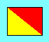

Office Signal Flag Code
Version 0.3.3 30 Jan 2009
Additions and suggestions to <CO149 [whirlpool] PACKETGNOMES [spot] ORG>
General Notes
The current code is quite a departure from the previous version and is based more
on usage than on the International Code. I've removed the
international definitions from this page; they are available
here.
Fewer codes are defined and greater use of flag combinations is made.
Definitions not encoded here, but still under consideration appear at
the bottom.
I and L are set aside for management roles. These include project
managers, technical leads and staff members having a primary
area responsibility (e.g. buildmasters). These flags are meant to
communicate status relating to policy and procedure and to support the
added responsibilties of these roles.
Some hoists refer to a specific person. Sites are encouraged to
allow members to pick a personal identifying flag, preferably from the
alphabetic flags. Places and things should be defined as well,
with emphasis on context.
n refers to a numeral flag, x refers to a letter flag. Usually
With the ten numeral flags and the 3 substitute flags, one can create
any 4-digit number. The proof is left for the student. The Code
flag is used as a decimal point when followed by another number, or
takes a value of 1/2 by itself. Thus 7 CODE can mean 7.5 or 7:30
depending on context. Times are in hours (or with CODE 1/2 hours)
in 24-hour time. 05 is 5am, 17 is 5pm.
It was my thought that the flags would indicate a general status rather
than be a way of communicating a specific message to a specific person.
TEE2 has proposed some definitions in the latter category, and I see no
reason that a flag can't have a separate meaning when you hit someone
in the face with it. So i've marked "status" and "immediate" below.
Definition sources are attributed where possible. Don't be afraid of
overloading a flag right now, if you feel strongly about the association
of flag and definition. We'll sort it out in Version 1.0 :-) (Some
flags are going to be harder to overload than others. I've noted
those where appropriate.
Flag blazons have been written and stored in alt tags so text browser
can have a clue what the flags look like. Terms are almost standard
heraldic. I've tried to keep blazons simple, omitting unnecessary
points of differencing.
| A |  |
B |  |
C |  |
D |  |
E |  |
F |  |
| G |  |
H |  |
I | |
J | |
K |  |
L | |
| M | |
N |  |
O |  |
P | |
Q | |
R |  |
| S |  |
T | |
U |  |
V | |
W |  |
X |  |
| Y |  |
Z |  |
S
u
b
1 | |
S
u
b
2 | |
S
u
b
3 | |
C
o
d
e |  |
| 0 |  |
1 |  |
2 | |
3 |  |
4 | |
5 |  |
| 6 |  |
7 |  |
8 |  |
9 |  |
- A
- (status) I'm working at capacity, and cannot take on additional routine tasks.
- B
- (status) I'm over capacity and proabaly in a panic. I can only take on emergency tasks.
- C
- (reserved) Yes
- D
- (status) Do Not Disturb. Send email or voice mail, please.
- E
- (immediate) Check email for an important message.
- E x... : Persons x... please check email.
- I
- (manager flag) This message refers to the department (project managers and tech leads) or to areas for which I have a primary responsibility.
- I E : Check email for an important message. (see also E)
- I E x... : Persons x... please check email.
- I J : Rumors of layoffs are exaggerated. (T. Obenhaus)
- I J 0: Rumors of layoffs are, unfortunately, not exaggerated. (T. Obenhaus)
- I L nn : Meeting at nn o'clock
- I L nn x... : Meeting at nn o'clock with persons x....
- I P x... : Persons x... are summoned.
- I W y... : Persons needing Items y... please contact me. (see also W)
- J
- Is it just me or is the attrition really high lately? (Also see I J) (T. Obenhaus)
- K
- "Office Hours" -- Feel free to chat me up (IJ89)
- L
- (manager flag) The meeting flag. L can stand in for I L. Or it can mean "Can we have a meeting soon?" Otherwise reserved to the manager for local definition.
- M
- (status) The Mental/Health Mood Flag. This could be a bad idea. It is always better to leave this off than to lie about one's mood. The merest use of this flag might be construed to be an attitude problem, and may even result in legal action against you. Please discuss your moods with someone in authority before displaying them from the staff. That said...
- M B : Unapproachably Psychotic
- M H : Horny.
- M H x... : Horny for x.... (This is a great way to get fired or sued!)
- M I : Departmental Protest 1. This is a sign of solidarity with your manager against a bad business decision. Upper-level managers who see M I displayed all up and down a hallway should fear for their lives.
- M L : Departmental Protest 2. This is a sign of solidarity against your manager against a bad management decision. Project managers who see M L displayed all up and down a hallway should fear for their careers.
- M I L : Departmental Protest 3. This is a sign of solidarity against everyone. An individual flying this hoist is typing up a letter of resignation at that very moment, or is in his boss's office quitting.
- M N : Nervous and/or paranoid.
- M W : Unapproachably Happy
- N
- (reserved) No
- N C : Distress. This is wrath of the gods, help me i'm dying, call 911 sort of distress. Hoisting this in jest should be considered a discharge offense, or at least thought of as a request to be put in the sort of distress one is pretending to be in...
- O
- (status) I'm out of the office, normally until the beginning of my next shift or next business day
- O nn : Out, will be back at indicated hour
- O L : Out to lunch
- O M nn : At an offsite meeting (optional: back at nn o'clock)
- O V : out on vacation. 4-digit date of return may be appended.
- O W : out for coffee (see W below)
- P
- (status) In Progress, information not yet available. (example: a buildmaster would fly this to note that the build has not yet completed.) The expectation is that the P will be struck, and E hoisted when the build is done and information is available. One might fly K if no email report will be made.
- Q
- (status) I'm at the other location
- Q n : I'm at location n
- Q x : I'm at location x
- R
- (status)Recreation! A place of H usually refers to the home of the hoister. If place H is otherwise defined, use SUB1 to represent that place. Most activities follow the pattern espablished in R D and R P.
- R D : Drinks after work
- R D x : Drinks after work at place x
- R D nn : Drinks at nn o'clock
- R D nn x : Drinks at nn o'clock at place x
- R P : Party
- R P H : Party at my house
- R P nn H : Party at nn o'clock at my house
- R V : Volleyball!
- S
- (status) I'm in a problem solving mode and keeping a lot of state in my head. Can you wait a bit?
- V
- (status)Physical Health
- V H : I am injured and not able to take a full load
- V O : I've been oxidized / I'm in dire need of antioxidants
- V Q : I'm infectious and should be quarantined
- W
- (immediate) I'm in need of coffee.
- W x... : I'm in need of Items x... (usually in response to I W x...)
- Y
- (status) i on the first pass over my email / trying to get through the morning setting up exercises
- Z
- (punctuation) Local code additions. These aren't dictated by standard, local offices should define these. Following are some suggestions and examples of how to use this block. These include candidates for inclusion above.
- Z A : (immediate) I've got it under control, or, someone else is already taken care of that (TEE2)
- Z B : (immediate) Just let me get on with it
- Z B 1 : (status) I just got off the phone/out of a meeting/done talking with someone who needs to be killed, and will transfer that rage to the next person who bothers me with an idle or inane request. (IJ89)
- Z D : (status) I'm listening to music now, and will impale anyone who disturbs me. (IJ89)
- Z F : (status) I'M LONELY!
- Z K : (status) I require human interaction (may be covered by "i'm lonely"). (IJ89)
- Z M : (immediate) Shut up and listen to me! (TEE2)
- Z N : (immediate) Don't even *think* of going *there*! (TEE2)
- Z N 2 : (immediate) OK, you went *there*, now pay the price! (TEE2)
- Z O : (immediate)I'm leaving due to excess of stress (IJ89)
- Z O 1 : (status) I've left early today due to excesses of stress. (may imply, "please don't add any more when i return") (IJ89)
- Z P : (immediate) "Hold on" (when on the phone, talking with a yahoo, etc.) (TEE2)
- Z T : (status) It is all about T! (TEE2)
- Z T n : (status) I have X tasks in the queue (X indicated by the trailing number) (implies that any further requests will go on the end of the queue). (IJ89)
- Z U : (Immediate) I'm O.K. with your idea for *now*, but retain the right to deny my involvement later. (TEE2)
- Z V : (immediate) HELP!
- Z W : (immediate) You want *what*?
- Z X : (immediate) I require assistance
- Z SUB1 : (status) The W4R3Z partition is full. Please delete files.
- Z SUB3 : (status) Non-employee in area. Hide the trade secrets!